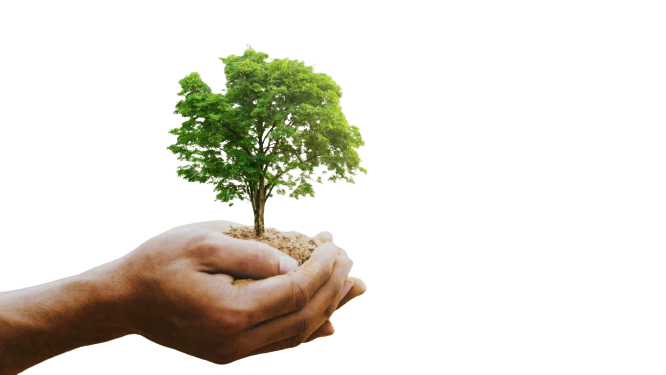
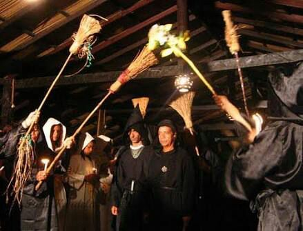
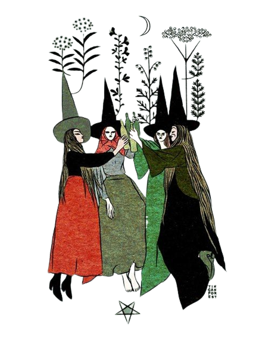
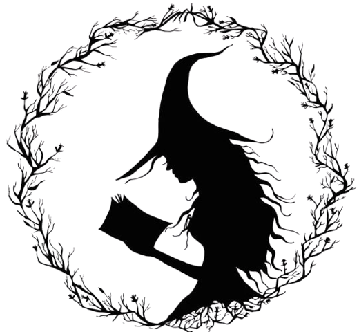
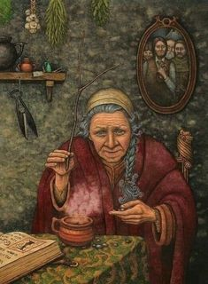

WICCA NATURAL
SEJA UMA WICCA

"A Wicca é uma religião pagã que se dedica ao conhecimento da espiritualidade a partir da natureza e da psique humana."
CRENÇAS:
Culto à Deusa Tríplice e Seu Consorte, ou seja, aos Deuses antigos
Iniciação
Respeito ao conselho Wiccaniano: “Faça o que quiser, se a ninguém prejudicar”
Submissão à Lei Tríplice
Respeito absoluto à vida
Crença na reencarnação
Crença na Grande Teia universal
Celebração dos ciclos da Natureza
Prática de magia natural
Proibição completa de proselitismo

"Os rituais wiccanos são realizados no interior de um círculo
mágico com a utilização de instrumentos de altar como vassouras, cálices, caldeirões e outros. O símbolo
mais utilizado é o pentáculo, que representa os cinco elementos componentes da natureza."
Há vários rituais que podem ser praticados em grupos grandes, pequenos ou mesmo
sozinhos.
O importante é que o ambiente esteja limpo, purificado com ervas e que o altar esteja arrumado. As pessoas
envolvidas devem saber de antemão qual será sua função dentro do ritual para que não haja dispersão de
energia física ou espiritual.
Igualmente devem ser invocados os elementos e as deidades ao fazer o círculo.
Ao terminar, os círculo é rompido e pouco a pouco os participantes voltam ao presente. Pode-se servir algum
alimento ou bebida para ajudara relaxar neste momento.
Convém registrar as experiências sentidas no Livro das Sombras, uma espécie de diário dos praticantes de
religiões pagãs.
Entre 1999 e 2000,estudou-se um grupo de bruxas praticantes de wicca. Este grupo é formado por uma maioria de mulheres, que se
designam como bruxas. Operam dentro da idéia de uma bruxaria moderna que retoma características da bruxaria
tradicional, mas sem a idéia de acusação ou malefício. A wicca utiliza concepções tradicionais sobre os
gêneros, invertendo a valoração costumeiramente encontrada para ambos, dando ao feminino maior valor, o que
se traduz na preeminência das mulheres em sua teologia e práticas rituais.

Recriar conexões e sociabilidades faz parte da busca do homem e da mulher modernos.
Essa fragmentação é pujante no que refere à mulher, pois, ao mesmo tempo que a
modernidade a emancipou de cobranças e amarras tradicionais,
trouxe a essa
mulher o desafio de não perder a conexão com a própria feminilidade.
No dizer de Tina Chanter: Não é, portanto,
suficiente, para as feministas tornarem-se
militantes e poderosas, terem a voz de comando.
As feministas também devem tomar a frente no forjar de uma nova política e de uma nova ética,
de novas
maneiras de se relacionarem, tanto entre as mulheres quanto entre homens e mulheres.
Em vez de continuar a
aderir a relações de competição, de adversários, o feminismo deveria
experimentar produzir ambientes onde se
incentivem relações de apoio mútuo, em que a
diversidade seja prezada e que a negatividade não tenha poder
de controle.
Criar relações com base no cultivo da novidade não é uma questão de afirmar falsamente
que as
mulheres são melhores do que os homens na questão do mutualismo ou do cuidado ou de
voltar-seao outro -
mesmo que historicamente tais tarefas tenham tocado às mulheres.
As bruxas naturais estão sempre em harmonia com os animais e a natureza,
pois de fato são sua proteção e proteger a
natureza é tarefa de todos os seres humanos.
SER BRUXA NATURAL é ser livre.
sem limites, é viver de acordo com aquilo que seu coração diz, é saber se
respeitar e amar
a sí mesmo e não fazer mal para ninguêm.
A natureza é bela e atraves dela podemos curar,
abençoar, prosperar, acalmar, meditar, concientizar, se
proteger do mal e muito mais.

